Hidden Rooms in undertale
special thanks
-
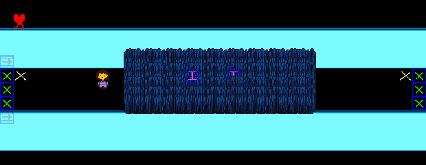
Room 123 (room_water_prebird)
A room found between room_water_farm and room_water_shop.
Its name suggests that Toby Fox may have planned to place it between room_water_friendlyhub and room_water_bird.
The room has a thin stretch of land surrounded by water on two sides. Grass covers the path, and the protagonist can talk to four NPCs hidden within it.
Most of them talk about catching bugs, but one of them asks the protagonist to do something about their friend, who the NPC says has a creepy smile.
If the protagonist speaks to them again, the NPC asks them where their friend went.
Exiting the area on the left crashes the game, and exiting to the right softlocks the game at a black screen.
Given the frequent mention of catching bugs,
this could be the bug catching spot Toriel mentions when talking to her in her home.
-
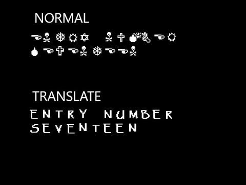
Room 264 (room_gaster)
The room displays a message in the Wingdings font,
while the sound "mus_smile" (a chopped and screwed variant of Muffet's laugh,
slowed down to resemble a dial-up modem) is played;
the text's associated typing sound consists of random snippets from abc_123_a.ogg.
This is the message:
ENTRY NUMBER SEVENTEEN
DARK DARKER YET DARKER
THE DARKNESS KEEPS GROWING
THE SHADOWS CUTTING DEEPER
PHOTON READINGS NEGATIVE
THIS NEXT EXPERIMENT
SEEMS
VERY
VERY
INTERESTING
...
WHAT DO YOU TWO THINK
-
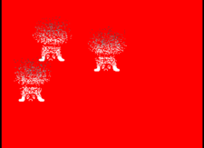
Room 267 (room2)
A room that is just pitch red,
unless obj_vaporized in the Create event of the three objects in the room are replaced by obj_vaporized_old.
When this is done,
it is revealed that there are actually several sprites of the Froggit in the room,
and the sprites are actually vaporized before we can even see them.
-
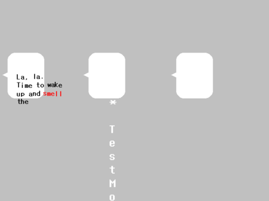
Room 271 (TESTROOM)
A grey room most likely used to test out the dialogue boxes in the game.
In the Undertale Demo,
this room replaces room 326 (the Dog Check screen) if the SAVE file is invalid.
Along with the three battle dialogue boxes,
some text appears 'in' the left dialogue box that reads:
La, la. Time to wake up and smell the pain.
* Though.... It's still a little shaky.
fhuehfuehfuehfuheufhe
-
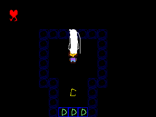
Room 272 (room_water_redacted)
An empty,
black room with nothing but an NPC in the center,
who only appears when you get close.
Speaking to the NPC shows the following dialogue,
with the aforementioned abc_123_a.ogg dialogue sound:
* [REDACTED]
-
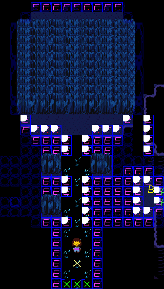
Room 273 (room_water13)
A room that uses many of Waterfall's overworld assets,
presumably for testing.
It has a long narrow pathway that leads to a large area of land covered in tall grass,
with bridge seeds hidden inside.
The exit on the right side of the room connects to room_overworld,
whereas the bottom exit crashes the game.
Based on its name and layout,
it may have been intended to connect room_water12 and room_water14,
before the role was delegated to Onionsan's room.
-
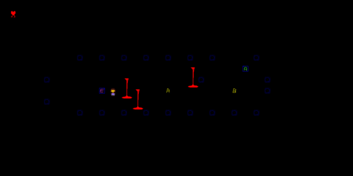
Room 274 (room_overworld) and Room 275 (room_overworld3)
A black room with strange NPCs that move around the room.
The NPCs appear to be falling lava streams with faces. This room also has collision boxes,
a Flowey dialogue trigger, and a door to room_overworld3. The Game Over theme,
"Determination",
plays in the background,
but triggering the Flowey dialogue will cause extra music to overlap with it,
often many times over.
Entering the room via room_water13 places the protagonist directly on the dialogue trigger.
Upon activating Flowey's dialogue,
the game attempts to play Flowey's opening dialogue,
resulting in a glitched 'battle' that ends immediately,
leading to a strange state in which the SOUL can be moved,
but with reversed controls.
If Flowey was killed in a previous Neutral Route,
it skips to Toriel's following dialogue.
The NPCs are programmed to speak dialogue written in testlines.txt when you interact with them.
If that file doesn't exist,
the game crashes.
room_overworld3,
on the other hand,
is a very interesting room with... nothing in it,
except for a door back to room_overworld.
-
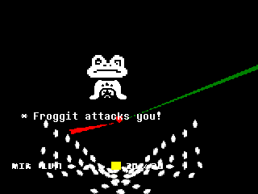
Room 276 (bullettest)
A battle against a Froggit that seems to be used to test the bullets sent by enemies in the game.
A strange red and green laser effect is also placed near the SOUL.
Many pellets will spawn at the bottom of the screen,
before rising up to the top.
Despite appearances,
the menu options can still be selected,
and the Froggit can be fought,
spared,
or fled from,
with varying effects.
If the Froggit is killed or the screen is not exited fast enough,
the game crashes.
If the Froggit is spared or otherwise not attacked or fled from,
then Toriel appears and scares the Froggit away.
The game then returns to the previous room (if the SAVE file is edited then launched,
there is no previous room,
so it restarts).
-
Room 277 (room_water16A)
Another Empty room. Probably meant to appear in Waterfall.
-
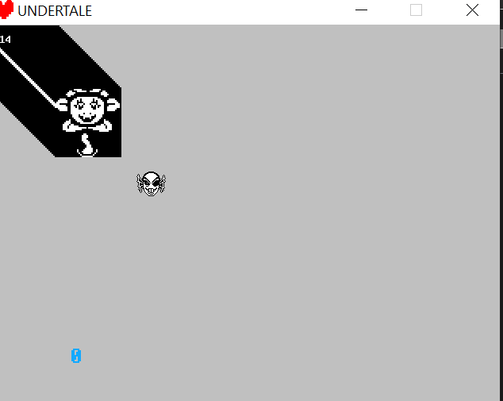
Room 287 (room_spritecheck)
grey room that was,
obviously,
used to check the sprites used in-game.
The game will display every single sprite in the game in rapid succession.
Strangely,
a sprite for the head of Undyne the Undying loads on the screen,
but never changes,
moves,
or disappears.
A lone,
blue zero is present near the bottom of the screen,
which begins counting
up once all of the sprites have been checked.
Pressing Space while in Debug Mode allows the player to change to the next room,
the Joystick Config room.
-
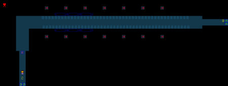
Room 296 (room_fire4)
A room that was presumably meant to be used as an area for Hotland.
The room even plays the Hotland overworld theme,
"Another Medium".
The room seems to use floor tiles from Waterfall,
though,
so it may have been intended as a transition between the two areas.
The room contains a path lined with directional vents that carry the player to the right.
Attempting to leave the room via the right exit crashes the game,
while going below loads room 294,
a part of Photoshop Flowey's battle.
This also crashes the game.
The most interesting thing about this room,
however,
is the presence of a very strange trigger,
located directly above the entrance to the room.
If flag 367 (the flag which determines if Alphys calls Frisk throughout Hotland and disables her calls if the player is on a genocide route) is enabled,
it will cause the game to crash,
but if the flag is disabled,
then it will result in a phone call with the intro dialogue,
culminating in a battle with Mettaton.
-
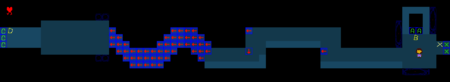
Room 297 (room_fire10_old) and Room 298 (room_fire10A_old)
Another room that tests assets exclusive to Hotland,
while still using some of Waterfall's assets.
The room contains a wave-shaped conveyor belt path that leads to another section of floor.
Falling off the conveyer or entering the doorway on the right side will take the player to room_fire10A_old.
Aside from falling,
the leftmost exit crashes the game,
and the rightmost exit results in a black screen.
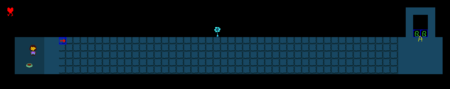
Undertale-room fire10A old.png
This room contains a wide,
straight conveyor belt path leading to the right and a bowl of dry dog food.
Along with these are an Echo Flower next to the conveyor path,
and a door on the other side that takes the player back up to room_fire10_old.
-
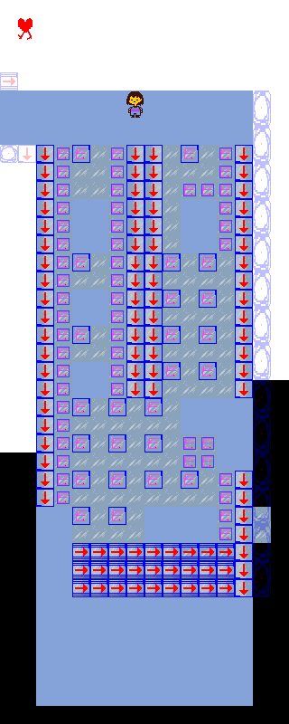
Room 299 (room_tundra_placeholder)
A room that appears to be used to test assets in Snowdin.
The room is filled with tiles of ice and snow. Some tiles do nothing,
others are slippery,
and some slide the protagonist upwards.
There is nothing of particular note here,
and there are no exits.
-
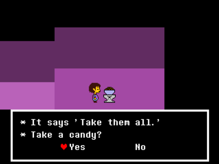
Room 300 (room_ruins12B_old)
A simple,
non-detailed purple room with a bowl on a pedestal that dispenses Rock Candy,
an item which can't be obtained anywhere else.
Given the room's layout and name,
it's likely this room was replaced with the Spider Bake Sale after Muffet was implemented into the game (apparently, rather early on).
Unlike the Monster Candy bowl,
the amount of 'candies' taken does not seem to affect anything.
-
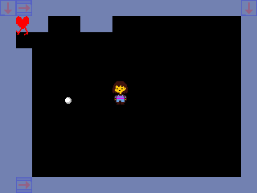
Room 301 (room_tundra_rollsnow)
A room that uses Snowdin's assets and contains a unique snowball object that can be made larger by rolling it,
unlike the one that is used in-game.
Presumably used for testing the snowball physics.
-
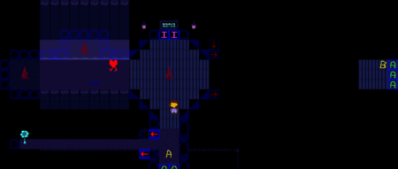
Room 302 (room_water7_older)
An old(er?) version of room_water7.
If entered without editing or removing the file "obj_waterpushrockgen",
this room crashes the game.
This room appears to use many assets from Waterfall such as lanterns,
an Echo Flower,
and... well... water.
Among these though,
are a few poorly-drawn torches that can light up and make a sound effect when interacted with,
similar to the mushrooms found in Waterfall.
Lighting all the torches triggers an invisible path with poorly-drawn guiding lights.
Judging by the low quality of these entities,
it's likely that these were either used as placeholders,
or for testing purposes.
The sign on the north wall has no dialogue assigned to it,
so it will do nothing except create a text box that immediately closes.
Leaving the room crashes the game.
-
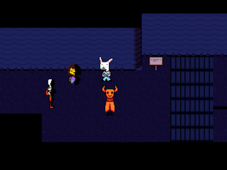
Room 303 (room_meetundyne_old)
An older version of the room where the player is introduced to Undyne for the first time.
There are various Waterfall assets scattered around;
as well as the bunny guy and devil NPCs from Snowdin.
The right exit connects to room_water_mushroom,
while the left exit crashes the game.
Reading the sign repeats the last thing that was said (including cutscene dialogue),
implying it may be a placeholder for an echo flower.
Walking further right into the boards triggers the final version of the cutscene where the player first meets Undyne,
which looks pretty weird, as the layout is entirely different.
Monster Kid's dialogue can be triggered,
too,
and the dialogue of the two NPCs will change after the whole scene is finished.
An early version of said cutscene (named obj_undyne1_old) exists,
which fits in this room.
-
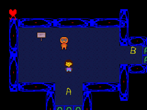
Room 304 (room_water_mushroom)
A small room that uses Waterfall's assets.
It is connected to room_water_mushroom and room_monsteralign_test via the bottom and right exits respectively.
The only entities in the room are a crystal and an NPC that uses unique dialogue.
Presumably,
the dancing mushroom in Temmie village was originally planned to be used here.
-
Room 305 (room_monsteralign_test)
A black room with a Memoryhead enemy that disappears.
Likely used to test the alignment for the distortion used for that enemy.
-
Room 321 (room_empty)
Another empty, black room.
-
Room 326 (room_of_dog)
This is the Annoying Dog error screen.
-
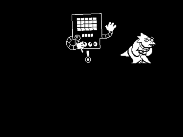
Room 327 (room_quizholder)
A black screen with Mettaton and Alphys,
as seen in Mettaton's quiz show.
The player can't do anything here.
-
Room 328 (room_friendtest) and Room 329 (room_bringitinguys)
room_friendtest is a test of the scene in the True Pacifist route in which Toriel and friends interrupt the protagonist's battle with Asgore.
The background is a pure gray color.
The game crashes when Flowey attempts to bring up the protagonist's SOUL.
room_bringitinguys is a test of a part of the same scene, where various monsters come to the protagonist's aid.
Unlike the previous,
this room's background color is the regular black color,
and the main cast is absent.
The scene does not progress past the leftmost monster's dialogue.
-
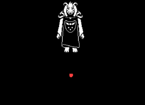
Room 333 (room_asrieltest) and Room 334 (room_afinaltest)
room_asrieltest is black and was likely used to test Asriel's idle animation in his fight.
The SOUL is a placeholder sprite and there is no bullet board;
the SOUL can move freely around and behind Asriel's battle sprite.
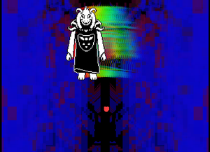
Asriel floats up and down for roughly 20 seconds (corresponding to the opening segment before the drop in "Hopes and Dreams"),
before beginning to move from side to side in an arc pattern as his rainbow sprites display.
This is identical to what happens in the final version of the fight.
This fight's debug commands work fairly normally,
but attempting to make him attack crashes the game.
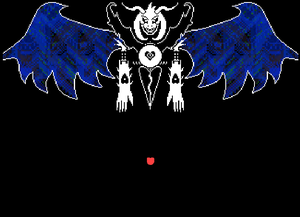
room_afinaltest is pretty much the same:
The SOUL is the same placeholder sprite seen in room 333,
and can move freely.
The main difference is that Asriel is in his final form.
Nothing of note happens here.
-
Room 335 (room_dogshrine, since v1.05)
Since v1.05,
room 335 is a broken version of the Dog Shrine,
a PlayStation 4 exclusive content.